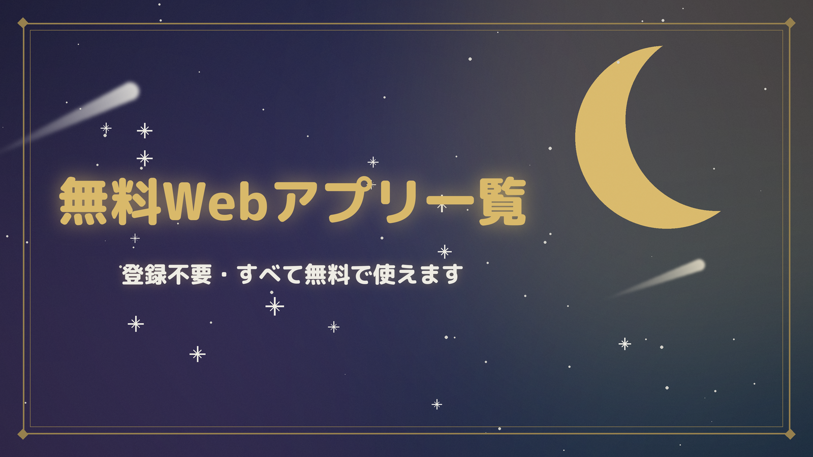

🌱
つみたてシミュレーター
毎月の積立でいくら貯まる？将来資産をグラフで確認。目標金額からの逆算も
⏳
月夜の集中タイマー
夜空の下で集中できるポモドーロ式タイマー。今日の集中時間も自動記録
🪙
配当金シミュレーター
配当でいくらもらえる？必要な投資額は？再投資の複利効果もグラフでわかる
🧱
年収の壁シミュレーター
パートの「いくらまで働くと損？」を手取りグラフで見える化。2026年10月の新制度（週20時間の壁）対応
❄️
エアコン電気代シミュレーター
つけっぱなしだと1ヶ月いくら？部屋の広さと使い方を選ぶだけで電気代を概算。節約の目安つき
🍳
週の献立プランナー
ボタン1つで1週間分の献立を自動提案。食材の使い回し・買い物リストの自動集計つき
📝
きょうのやること
毎日同じToDoを手書きしなくていい。定番の家事を登録すれば毎朝自動でリスト化
🧺
せんたくタグ
洗濯表示の記号をタップするだけで洗い方がわかる。今日の洗濯の自動仕分けつき
🧹
そうじナビ
賃貸退去のそうじを汚れの見た目から検索。退去日から逆算の週プランと敷金の目安つき
🌙
月みくじ
1日1回のおみくじ・12星座の今日の運勢・タロット。毎日変わる無料占い
🎵
STAR BEATS（音ゲー）
夜空を舞台にしたブラウザ音ゲー。全11曲×4難易度、太鼓の達人風の選曲でスマホ・PCで今すぐ遊べる
🐇
MOON DODGE（ムーンドッジ）
月うさぎで流星をよけ続ける避けゲー。1回10秒からサクッと遊べて、夜明けまで逃げきればクリア
🔮
宵乃こよみの事件簿 第一夜
夜だけ開く占いの店。“聞く”占い師こよみが少女の姉の秘密を解き明かす感動ノベル。選択で結末が変わるマルチエンディング（1周5〜10分）
🌙
月うさぎのすみか
あなたの世界の時間と本物の月齢につながった、月うさぎのお世話アプリ。名前をつけて毎日会いに行こう
🎐
音の間（おとのま）
和風Lo-fi BGMと雨・風鈴・虫の音・焚き火の環境音を自分好みに混ぜられるサウンドツール。スリープタイマー付き
🧘
和の深呼吸
4-7-8呼吸・ボックス呼吸を月のアニメーションで誘導する呼吸法ガイド。寝る前や集中前のリセットに
🌶
激辛レビュー生成器
褒めてほしいモノ・作品(または画像)を入れると、全力でこき下ろす誇張ジョークレビューを生成
🧠
謎の名言メーカー
テーマ語を入れると、実在しない賢者によるそれっぽい格言を自動生成
✨
存在しない占星術
生年月日から、あなただけの架空の星座を宵乃こよみが占います。同じ日ならいつも同じ結果に
運営:
りんねブログ